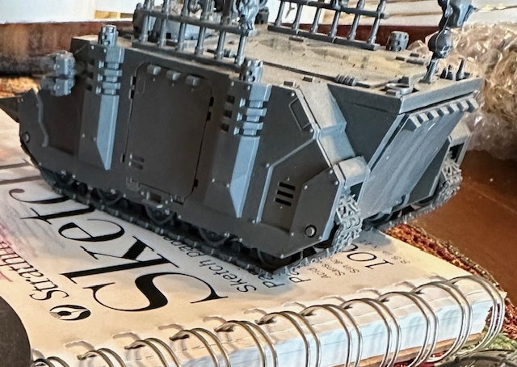

Materials Needed
- Warhammer 40K miniatures
- Paintbrushes
- Acrylic paints
- Water cup
- Palette
- Primer
- Optional: Washes, drybrushes, varnish
Preparation
Before painting, make sure your miniature is clean and free of any mold lines. Prime the miniature to provide a good base for the paint to adhere to.
Painting Techniques
Apply base coats to each section of the miniature, then add details using layering and shading techniques. Use thin layers of paint and build up the colors gradually.
Final Touches
Apply washes to add depth to the miniature, then use drybrushing to highlight raised areas. Finish with a varnish to protect the paint job.

Conclusion
With practice and patience, you can create beautifully painted Warhammer 40K miniatures to enhance your gaming experience.